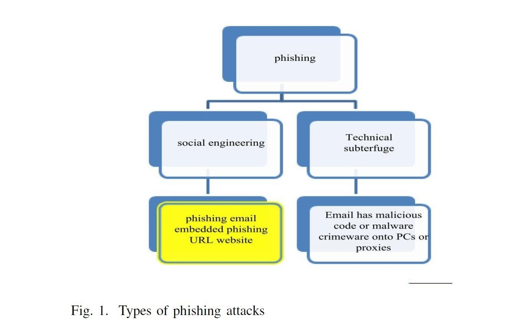
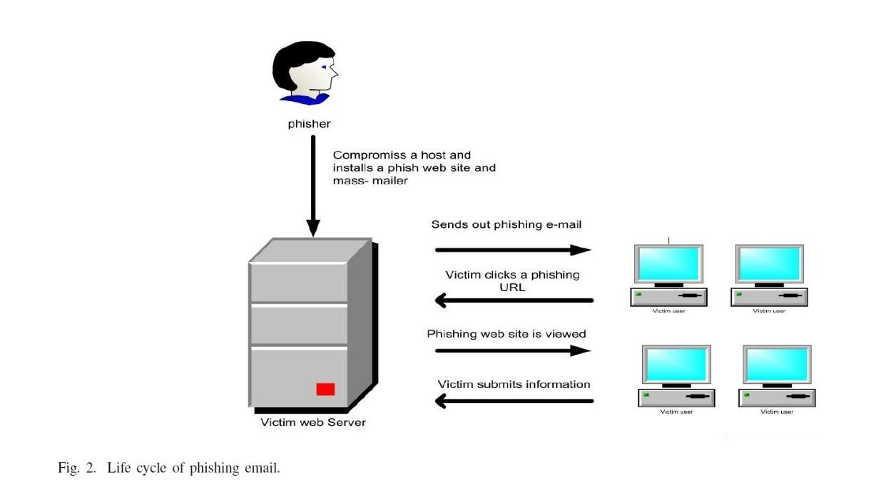
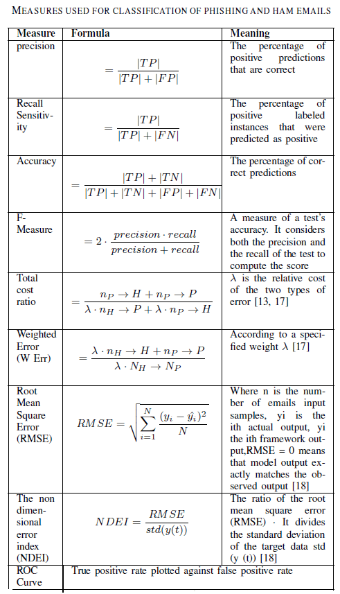
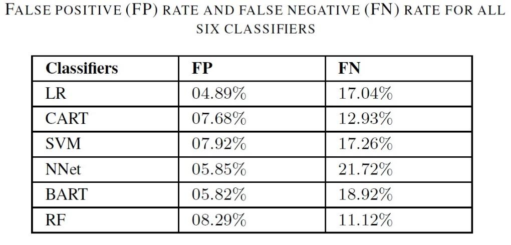
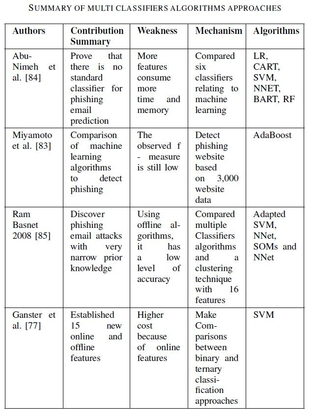
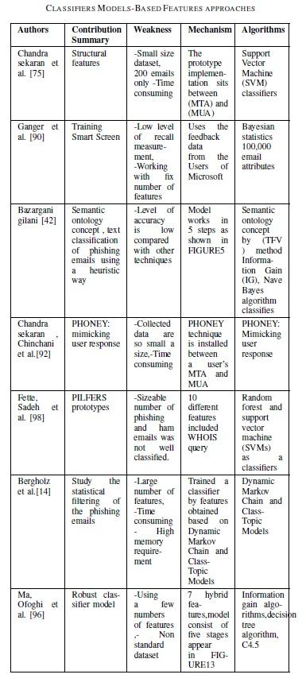
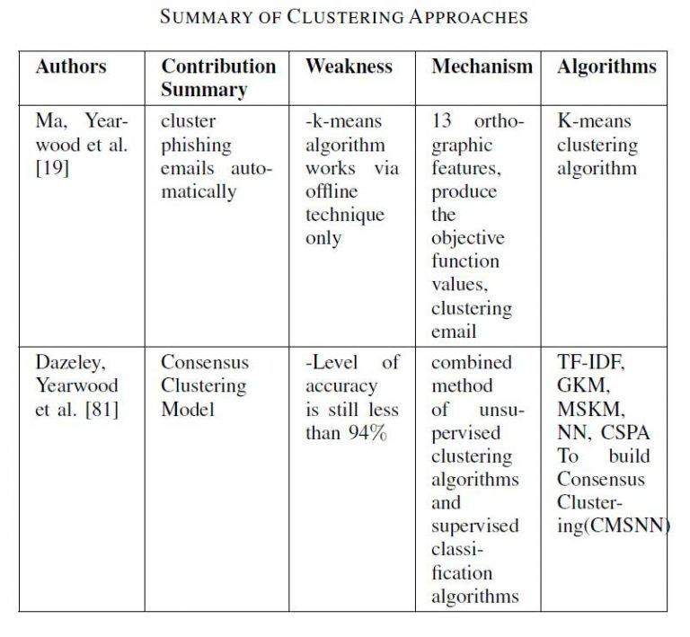
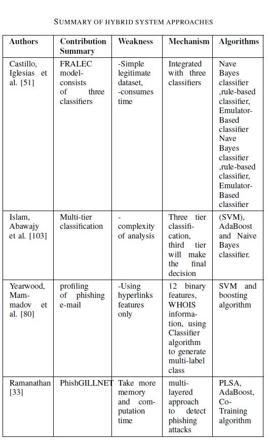

Data publicării: 21.01.2017
Autor articol: Anca Ignat
Emailurile phishing sunt un tip special de emailuri spam [1]. Sunt emailuri contrafăcute care pretind că au fost trimise de o companie sau bancă cunoscute. Emailul respectiv are inclus un link prin care se încearcă redirecționarea utilizatorului către situri special realizate pentru a obține informații de natură financiară (nume de utilizator, parolă, informații legate de cartea de credit). Acest tip de emailuri sunt o amenințare reală pentru comerțul electronic și sistemul bancar [2]. Un studiu efectuat în S.U.A. în 2009 a constatat că aproximativ 3.6 milioane de americani au căzut victime atacurilor phising, suma fraudată fiind de circa 3.2 miliarde $. S-a constatat ca numărul persoanelor înșelate prin emailuri phishing este în creștere, acest fapt fiind una din cauzele pierderii încrederii utilizatorilor de Internet în efectuarea de tranzacții online.
Această amenințare a dus la dezvoltarea unui număr mare de tehnici pentru detectarea acestui tip de înșelătorie. Vom prezenta în continuare tipurile de atac phisihing, ciclul de viață a unui asemenea email, metode de analiză a emailurilor, selectarea de trăsături pentru detecția emailurilor phishing.
Emailurile phishing sunt în principal de două tipuri: bazate pe înșelăciune sau bazate pe programe malware (Fig 1). Primul tip se bazează pe scheme de inginerie socială, folosind emailuri contafăcute care par că provin de la companii legitime. Acest tip de emailuri de obicei au inclus un link spre un sit web fals proiectat pentru a obține informații personale care să facileteze fraudarea persoanei care raspunde atacului. Cea de-a doua tehnică se bazează pe programe malițioase care exploatând breșele de securitate ale calculatorului folosit de utilizator, încearcă să obțină informatii personale.

Ciclul de viață (Fig. 2) al unui atac phishing începe cu o serie insistenta de emailuri care încearcă să convingă utilizatorul să viziteze un anumit link. Procedura seamană cu tehnica pescuitului (de unde își ia numele), emailul care conține informații despre situl contrafăcut reprezentând “momeala” pe care utilizatorul ar trebui s-o “muște”. Atât emailul cât și link-ul par în ordine la o privire superficială. Emailurile phishing au în general o durată de viață foarte scurtă. APWG (the Anti-Phishing Working Group, [3]) colectează și arhivează asemenea emailuri și încearcă să identifice atacatorul și eventualele fraude.
Filtrele care clasifică mesajele în legitime sau “phishing” pot analiza emailurile separat (verificând anumite cuvinte cheie sau link-uri) sau pot folosi tehnici de învățare automată.
Pentru a evalua eficiența unui asemenea filtru se folosesc următorii estimatori: TP (true positive) – proporția de emailuri de tip phishing corect clasificate ca fiind phishing, TN (true negative) – proporția de emailuri legitime corect clasificate ca fiind legitime, FP (false positive) – proporția de emailuri legitme clasificate incorect ca fiind phishing și FN (false negative). Măsurile care evalează gradul de success al tehnicilor de filtarare phishing sunt prezentate în Tabelul 1.

Trăsăturile care se extrag din emailuri pentru a le analiza si decide dacă sunt de tip phishing pot fi împărțite în trei categorii: de bază, (trăsături structurale), modele ale conținutului latentși lanțuri Markov dinamice. Trăsăturile de bază pot include informație structurală (de obicei sunt părți ale mesajului sau combinații de porțiuni din mesaj), link-urile din mesaj, tipurile de tehnologii Web folosite (HTML, scripting…), trăsăturile furnizate de un filtru spam, liste de cuvinte (care caracterizează, de obicei, astfel de mesaje). Modelele conținutului latent folosesc grupuri de cuvinte care e probabil să apară împreună în anumite mesaje (de exemplu, într-un email phishing, cuvintele “click” și “account” deseori apar împreună, iar într-un email financiar normal cuvintele “market”, “plan” si “prices” e foarte probabil să apară împreună). Trăsăturile legate de lanțurile Markov dinamice sunt trăsături de tip text, se bazează pe “bag-of-words” și modelează “limbajul” fiecărei clase de mesaje. Pentru a măsura eficacitatea trasăturilor, cel mai des se calculeză “frecvența în document” sau câștigul de informație.

Clasificarea metodelor de protecție împotriva atacurilor phishing
Vom trece în revistă cinci abordări ale apărării împotriva atacurilor phishing tratate în literatura de specialitate în funcție de poziția în fluxul emailurilor [1], [4],[5],[6].
Protecția la nivelul rețelei
Această metodă este implementată prin interzicerea pătrunderii în rețea a unor adrese IP sau unei mulțimi de domenii. Administratorul de sistem blochează mesajele provenite de la acele sisteme cunoscute ca fiind generatoare de atacuri phishing (folosind o “listă neagră” a domeniilor care trimit emailuri phishing). Acest tip de abordare e ușor de ocolit, folosind un calculator “curat” sau printr-o continuă schimbare de adrese IP.
Autentificare
Autentificarea are scopul de a confirma dacă un email este legitm. Autentificarea crește securitatea comunicațiilor atât la nivelul utilizatorului cât și a domeniului. Autenitficarea la nivelul utilizatorului se face folosind parole, care nu acordă siguranță prea mare la atacuri. Autentificarea la nivelul domeniului este implementată la nivelul provider-ului și poate fi o soluție eficientă de combatere a phising-ului, dar inconvenientul este că trebuie folosită aceeași tehnologie la ambele capete de comunicare. O altă tehnică ce poate fi folosită este trimiterea hash-ului parolei, domeniul trebuind să aibă implementată semnătura digitală și “hash” pentru parole. La primirea emailului se verifică autenticitatea lui prin verificarea cheii publice a instituției legitime.
Instrumente de partea clientului
Instrumentele folosite la nivelul clientului include filtre legate de profilul utilizatorului și barele de instrumente ale browserelor. De asemenea, se studiază proveniența atacurilor phishing, se verifică domeniile, se examinează URL-urile, conținutul paginilor. Pentru blocarea atacurilor phishing se folosesc fie liste albe, fie liste negre pentru a permite sau bloca accesul.
Educarea utilizatorului
O primă direcție se referă la oferirea online a informației despre riscurile atacurilor phishing, despre modul de a le ocoli. O a doua tehnică constă instruirea și testarea online care evaluează capacitatea utilizatorului de detectare a atacurilor phishing. A treia metodă, care este implementată în lumea reală, constă într-o instruire contextuală. Sunt trimise frecvent și intenționat emailuri phishing către utilizatori pentru a verifica feedback-ul dat de utilizatori si capacitatea lor de a discerne emailurile phishing de cele legitime.
Filtre pe partea serverului și clasificatori
Aceste filtre se bazează pe filtrarea folosind informații legate de conținutul acestor emailuri și sunt considerate ca fiind cea mai buna opțiune pentru atacurile noi (“zero day”). Se folosesc tehmici de învățare automată pe seturi de trăsături extrase din email. Abordarea pentru detecția emailurilor phishing este diferită de cea de detecție a emailurilor spam. Emailurile spam folosesc internetul pentru a-și transmite cât mai rapid informația unui număr cât mai mare de personae. Emailurile de tip phishing au aparența un emailuri legitime, transmise de companii de încredere. Tehnicile de învățare automată încearcă să clasifice fiecare email într-una din două clase (phishing sau legitim) folosind informațiile extrase dintr-o mulțime de emailuri clasificate anterior ca aparținând una sau alteia din cele două clase.
Primul tip de metode constă în abordarea clasică: extragere de trăsături urmată de clasificare (utilizând metode precum SVM, kNN, clasificatori Bayes, metode de tip boosting) folosind cunoștintele anterioare extrase dintr-o baza de date de emailuri deja clasificate.

Un alt tip de algoritmi combină informațiile furnizate de mai mulți clasificatori (random forest, rețele neuronale, arbori de regresie bayesieni adaptive BART, CART) pentru a obține o mai bună împărțire în clase.
Un alt mod de determina cu cât mai mare precizie că un email este de tip phishing este folosirea clasificatorilor pentru a extrage trăsături care să facă o cât mai bună distincție phishing-legitim.
Problema clasificării phishing/legitm se poate aborda și folosind învățarea nesupervizată, prin clusterizare. De asemenea s-a studiat folosirea clasificatorilor pe mai multe nivele (fiecare clasificator studiază conținutul emailului dintr-un anumit punct de vedere) iar la final se combină rezultatele.
In continuare sunt prezentate câteva tabele care sumarizează tehnicile folosite pentru combaterea fenomenului phishing. Referințele din tabele sunt cele din [1].




De ce phishing-ul funcționează?
În [7] se prezintă rezultatele unui studiu efectuat pentru a analiza motivele pentru care atacurile phishing funcționează. La studiu au participat 22 de personae. Dintre cauzele care fac ca phishingul să își atingă scopul autorii enumerează următoarele:
Lipsa de cunoștinte
legate de calculatoare
legate de securitate și indicatorii de securitate
Conținut vizual înșelător
- Text
Imagini care include texte
Imagini care mimează ferestre
Ferestre care maschează ferestre
Impresia unui conținut înșelător
Lipsa de atenție
- asupra indicatorilor de securitate
- neobservarea lipsei indicatorilor de securitate
Studiul a constatat că:
siturile phishing bune au păcălit 90% din participanții la studio
semnalele antiphishing sunt ineficiente (23% dintre participanții la studio nu au manifestat nici un interes pentru asemenea semnale)
în medie grupul a greșit clasificarea în 40% din cazuri
avertizările de tip pop-up sunt ineficiente (15 din cei 22 de participanți la studiu au ignorat complet aceste mesaje)
vulnerabilitatea la atacurile de tip phishing nu depinde de educație, vârstă, sex, experiență anterioară cu atacuri phishing sau timpul petrecut pe Internet.
Studiul concluzionează că tehnicile de avertizare actuale sunt ineficiente sugerând ca problema phising-ului să fie abordată și din alte perspective.
Referințe bibliografice
Almomani, A., Gupta, B. B., Atawneh, S., Meulenberg, A., & Almomani, E. (2013). A survey of phishing email filtering techniques. IEEE communications surveys & tutorials, 15(4), 2070-2090.
Jing, Q., Vasilakos, A. V., Wan, J., Lu, J., & Qiu, D. (2014). Security of the Internet of Things: perspectives and challenges. Wireless Networks, 20(8), 2481-2501.
Mohammad, Rami, Thabtah, Fadi Abdeljaber and McCluskey, T.L. (2014) Predicting phishing websites based on self-structuring neural network. Neural Computing and Applications, 25 (2), pp. 443-458.
James, D., & Philip, M. (2012, January). A novel anti phishing framework based on visual cryptography. In Power, Signals, Controls and Computation (EPSCICON), 2012 International Conference on (pp. 1-5). IEEE.
Dhamija, R., J. D. Tygar. The Battle Against Phishing: Dynamic Security Skins. Proc. SOUPS (2005).
Dhamija, R., Tygar, J. D., & Hearst, M. (2006, April). Why phishing works. In Proceedings of the SIGCHI conference on Human Factors in computing systems (pp. 581-590). ACM.